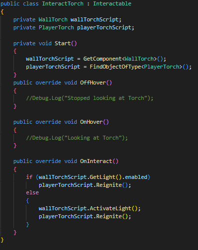
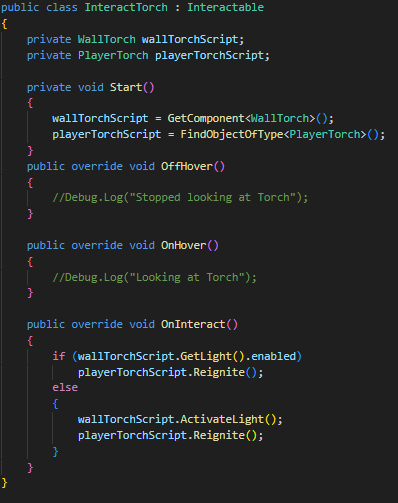
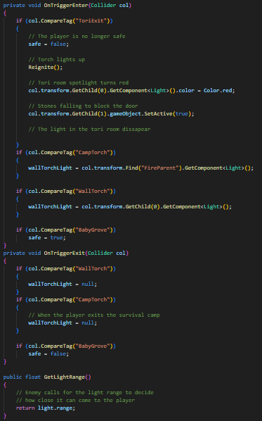
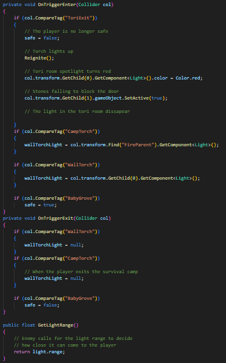
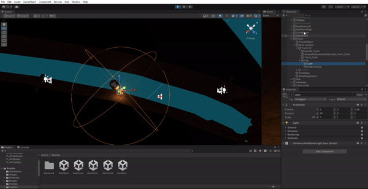
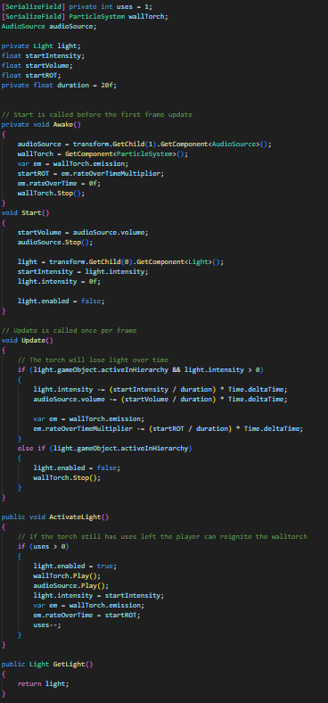
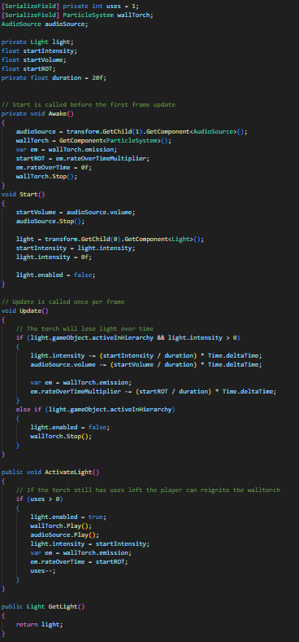
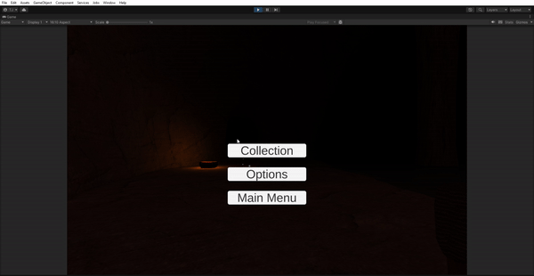
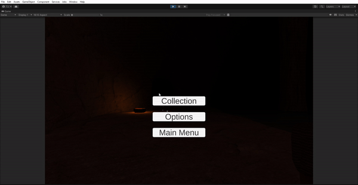

RTS unit selection
This was a project done in my free time because of my passion for RTS games, exploring RTS-based mechanics.
View project
Introduction For this project, Oilbaby, I worked on core mechanics such as enemy AI behaviour and a torch based survival system. As the player's torch light fades, the monsters draws closer. I also implemented sound effects, save system for collectibles. Explore videos and detailed code images below for an insight into my contributions.
Engine: Unity 3D, version 2022.3.27f1 Genre: Horror Project duration: 2 weeks My role: Game programmer, working on main mechanics Group: 6 members
 

 

 • To create a feeling of horror, I decided to implement a monster (oilbaby) that would creep closer to the player depending on how much the players torch was burning (light source). This would create a sence of anxiety and distress as the game got darker the monster would come closer and start crying loud. This was done by simply marking the player as the monsters target and allowing it to move closer to the player depending on the light source in the players torch fire. See images below, press to enlarge and shrink.
 

 

Working with AI, sound and lights were a lot of fun and it is definetly something I would like to dive deeper into in the future. I am always looking to improve hoping to learn more about programming, and how it can be used to create interesting things for games. Please feel free to read more About me and please check out my other Projects for additional info about my contributions so far to game development. I can also be contacted on Tom.ellstrom@gmail.com.
This was a project done in my free time because of my passion for RTS games, exploring RTS-based mechanics.
View project
This game is a mystery and investigation game with multiple endings. Where the player needs to find clues in order to solve the crime. I worked on Menu UI, player movement and AI movement.
View project